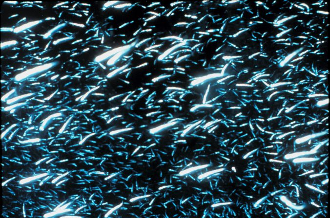
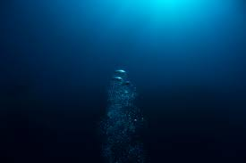

Mesopelagic Zone
"The Twilight Zone"


About the Twilight Zone
The mesopelagic zone, also known as the middle pelagic or twilight zone, is the part of the pelagic zone that lies between the photic epipelagic and the aphotic bathypelagic zones. It is defined by light, and begins at the depth where only 1% of incident light reaches and ends where there is no light; the depths of this zone are between approximately 200 to 1000 meters (~660 to 3300 feet) below the ocean surface. It hosts a diverse biological community that includes bristlemouths, blobfish, bioluminescent jellyfish, giant squid, and a myriad of other unique organisms adapted to live in a low-light environment. It has long captivated the imagination of scientists, artists and writers; deep sea creatures are prominent in popular culture, particularly as horror movie villains.
Human activities have large impacts on this zones ecosystems.
Some of organisms that live in this layer are:
- Cuttlefish
- Sperm Whale
- Wolf Eelss
- Bigeye Tuna
- Krill
- Gastropods
- Anglerfish
- Giant Squid
Learn more about the Mesopelagic Zone at these sites: